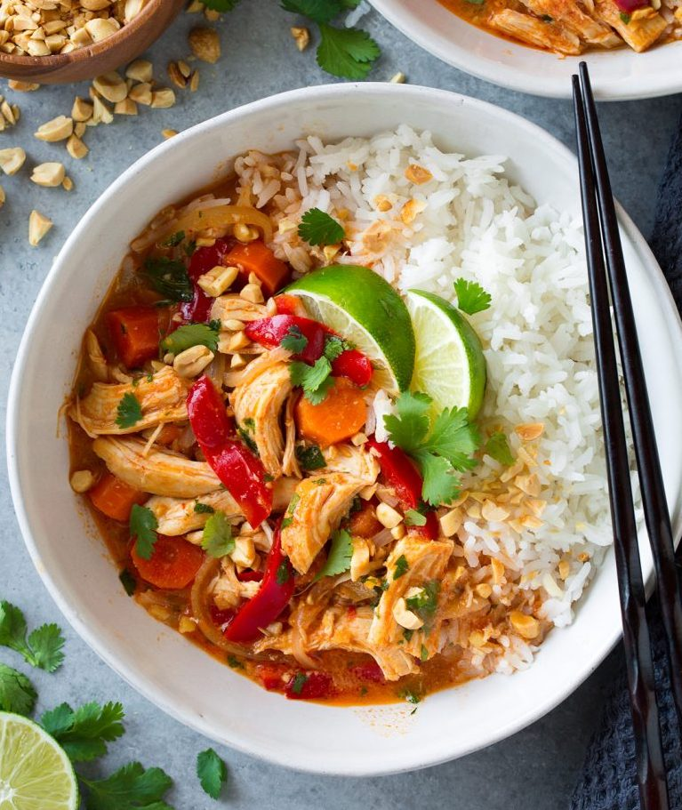

Dinner Recipes

Pan Seared Salmon with Creamy Garlic Dijon Sauce
This is such a flavorful, elegant salmon recipe that anyone can pull off. It comes together so quickly yet it's sure to impress anyone. Pan seared salmon is perfectly delicious on it's own but when you add a bright dijon sauce like this, it takes it to a whole new level!

Thai Chicken Curry
This is our favorite Curry recipe. Why? Because it's easy to make, it has the perfect flavor, creamy , hearty and tastes just like the one from Thai resturants but enjoyed in the comfort of your own home!

Instant Pot Creamy Tuscan Chicken Pasta
Bansari loves this recipe! You will essentially be throwing all of the ingredients into one pot. Everything goes into the Instant Pot and there's no sauteing beforehand.